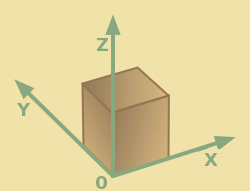

| home | project pages | download | documentation | doxygen | contact |
This page is a short user manual. The first few chapters explain the concepts, which is followed by some examples.
You can find the documentation generated from the source code here.

fig: Coordinate System
Our coordinate system is right handed; with the x-axis pointing to the right, the y-axis moving away from us and the z-axis pointing up. Rotation has a right handed grip, which means that if you look from the origin of a vector the rotation is clock wise around this vector.
The left-near-bottom corner of voxel space is its origin. If you designed your object with its center in the origin, you will need to translate this object to vit inside voxel space.